Lab3
- Part1 搭建网络拓扑
- 连通性测试
- 如图

使用ifconfig获得node1 IP地址, 然后node2向node1发包, 进行连通性测试, 通信成功 - 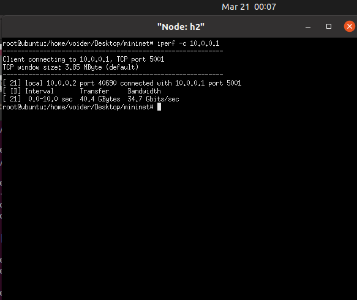
- 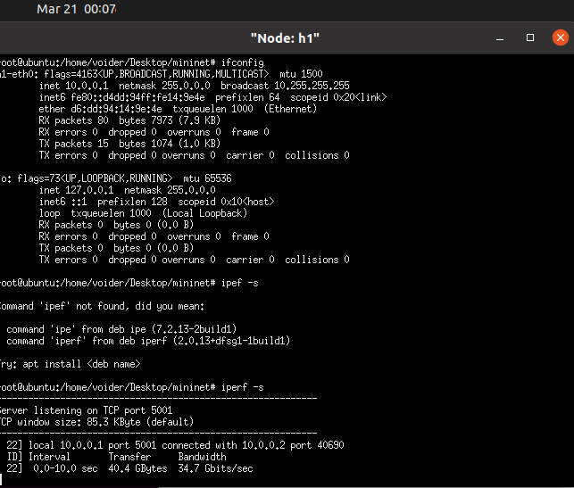
- part2 准入控制
- 建立准入规则 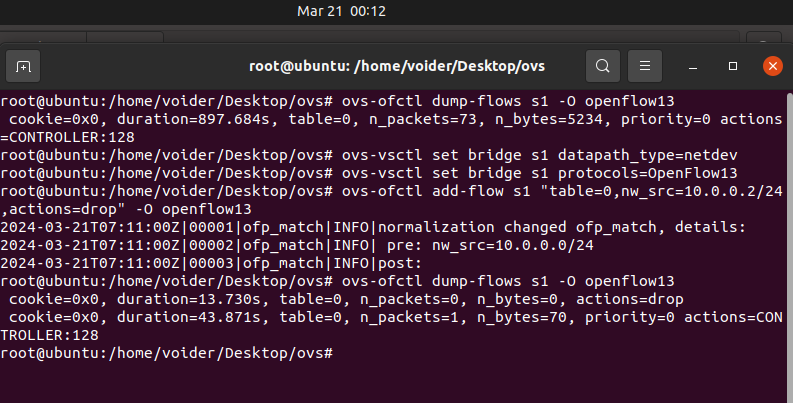
- node2向node1发包, 被拒收(包全部被丢弃) 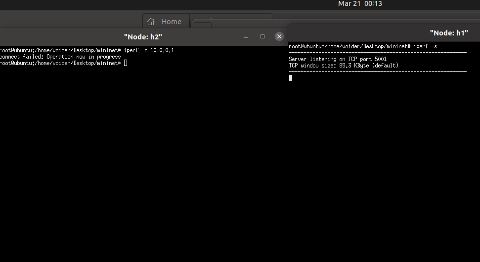
- part3 三种限速方式
-
网卡限速(Linux内核中接收数据包使用的方法叫策略(policing)用于限制网卡上接收分组(ingress)的速率，当速率超过了配置速率，就简单的把数据包丢弃。)
- 使用ovs对node1-2网卡进行限速 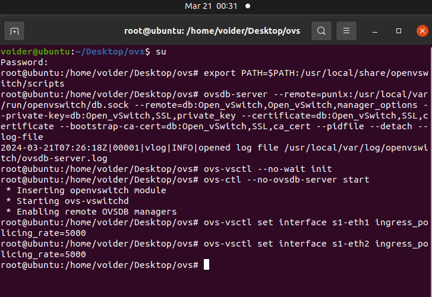
- node2向node1发包后的结果 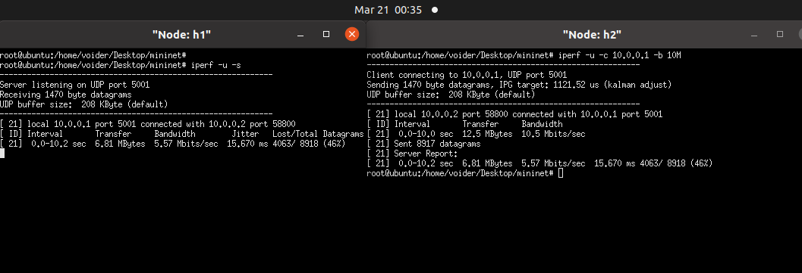
- 结果:
发送/收到(bytes) 丢包率(%) Jitter(ms) 发送/接收带宽(Mbits/sec) 12.5M/6.81M 4063/ 8918 (46%) 15.670 10.5/5.57 -
队列限速(Linux可以将网络数据包缓存起来,然后根据用戶的设置,在尽量不中断连接(如tcp)的前提下来平滑网络流量。内核通过某个网络接口发送数据包,它都需要按照这个接口的队列规则把数据包加入队列)
- 为node4网卡创建队列, 指定最大速率 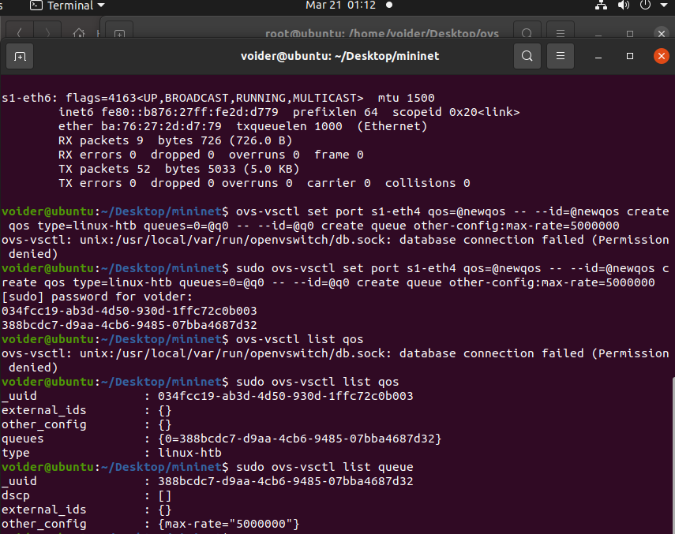
- node3向node4发送包 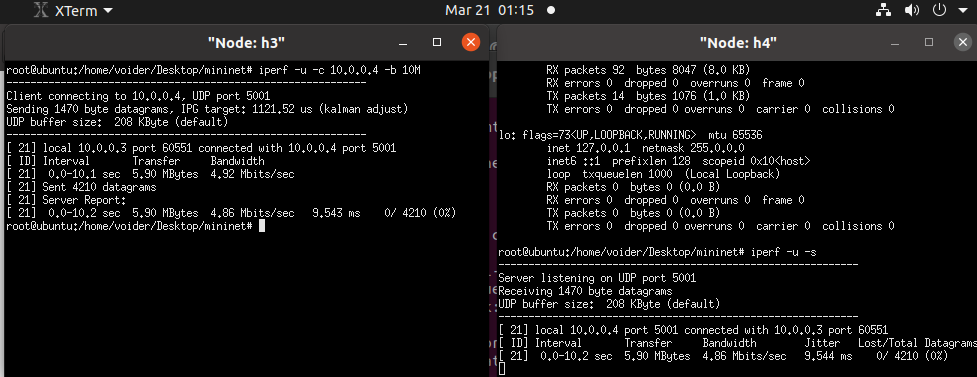
- 结果
发送/接收(bytes) 丢包率(%) Jitter(ms) 发送/接收带宽(Mbbits/sec) 5.90M/5.90M 0/4210 (0%) 9.544ms 4.92/4.86 -
Meter表限速
-
先按要求进行配置 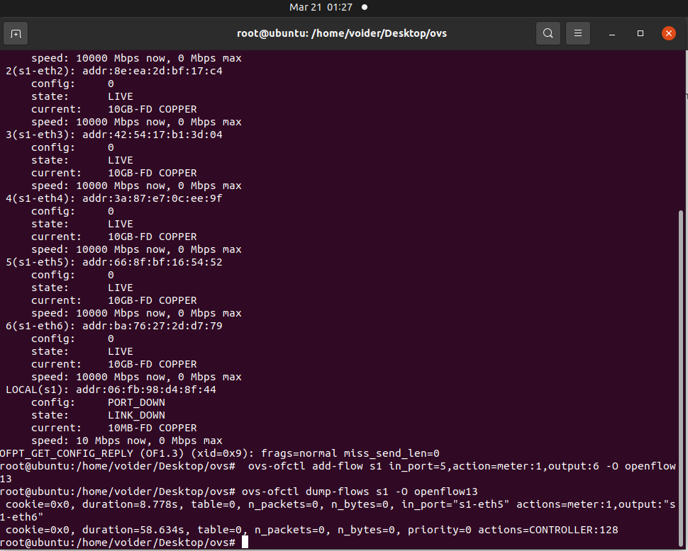
-
question1 尝试理解Line19,20两条指令，指出每条指令的具体工作是什么，并逐个分析其中各个参数的具体含义
- 第一条指令向交换机s1中添加流表项
- add-flow s1 在s1中添加
- in_port=5 表示这个流表项匹配进入s1的第5端口(s1-eth5)的数据包
- action=meter:1 指定匹配到的数据包应用Meter1的规则
- output:6 匹配到的数据包将被发送到交换机的第6端口(s1-eth6)
- -O openflow13: 指定使用 OpenFlow 1.3版本协议进行操作
- 第二条用于显示交换机s1上的所有流表项
- dump-flows 用于导出交换机上的流表项
- s1 指定要查看的交换机的名称
- -O openflow13 指定使用OpenFlow 1.3版本协议进行操作
- 第一条指令向交换机s1中添加流表项
-
发包测试
- 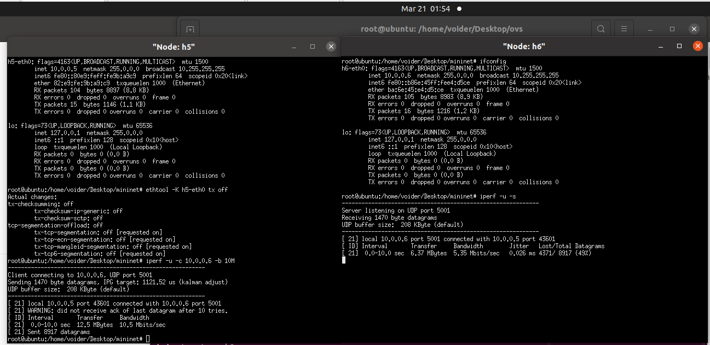
发送/接收(bytes) 丢包率(%) Jitter(ms) 发送/接收带宽(Mbits/Sec) 12.5M/6.37M 4371/8917 (49%) 0.026 10.5/5.35 -
Question2到这里，你已经完成了三种限速方式的实验，并获得了三组测试数据，请你就三组数据中的带宽、抖动和丢包率等参数，对三种限速方式进行横向比较，并适当地分析原因
- 接收端数据对比
限速方式 接收带宽(Mbits/Sec) 丢包率(%) Jitter(ms) 网卡限速 5.57 46% 15.670 队列限速 4.86 0 9.544 Meter表限速 5.35 49% 0.026 - 队列限速带宽限制效果好于网卡限速和Meter表限速: 队列限制确保数据包以有序和可预测的方式进行处理和传输——在发送端就已经做好了限制, 网卡限速与Meter表限速对于突发流量可能会出现带宽超出限制的情况
- 由于维护数据缓存, 队列限速会把没来得及发送的数据缓存在队列里, 不会简单地丢弃, 另外两种策略都会丢弃数据包
- Meter表限速抖动最小: Meter表可以根据实时流量情况调整其策略, 以更好地适应网络负载的变化。网卡在硬件上固定速率, 方式粗放; 队列限制也会出现队列拥塞的情况, 或者由于调度的问题, 产生发送速率的波动。
-
-
Part4 拓展与应用
- 场景模拟
- 为s1-eth1队列限速10Mbits/sec 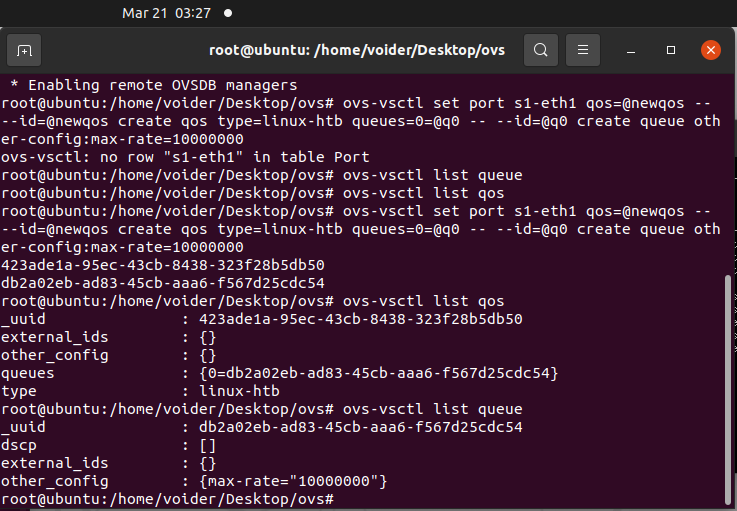
- node2-4同时发送 稳定后平均带宽为3.43 3.46 3.30 Mbits/sec 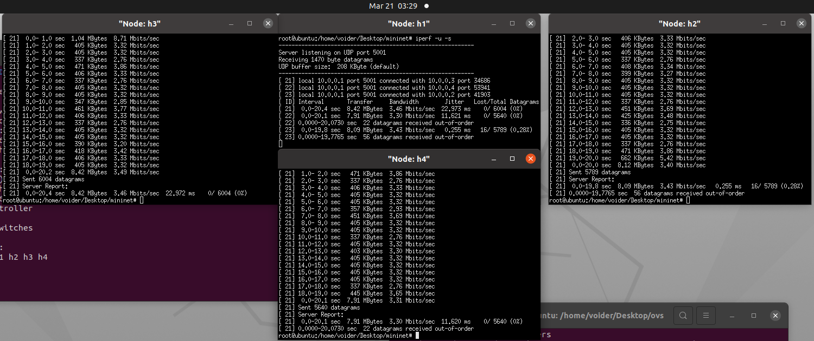
- 三者速率几乎相同, 可见三者是平等关系, 且三者带宽之和约等于node1限制的带宽——node1(Server)带宽被完全占用, 平均分配给三个client
- Qos设计
- 利用队列设置中的min-rate保证node2-3的速率 同时也使用max-rate选项保证node4带宽尽量多
- 首先设置node1最大接收带宽为10Mbits/sec 然后创造两个限速队列 通过流表配置到node2-3
- 运行指令
ovs-vsctl set port s1-eth1 qos=@newqos -- --id=@newqos create qos type=linux-htb other-config:max-rate=10000000 other-config:min-rate=10000000 queues=1=@q1,2=@q2 -- --id=@q1 create queue other-config:min-rate=5100000 other-config:max-rate=5400000 -- --id=@q2 create queue other-config:min-rate=3100000 other-config:max-rate=3400000 ovs-ofctl add-flow s1 in_port=2,action=set_queue:1,output:1 -O openflow13 ovs-ofctl add-flow s1 in_port=3,action=set_queue:2,output:1 -O openflow13 // 将两个最小值设置比5M 3M稍大 如果正好为这两个值的话会出现不能保证带宽的情况- 运行结果 能够满足要求 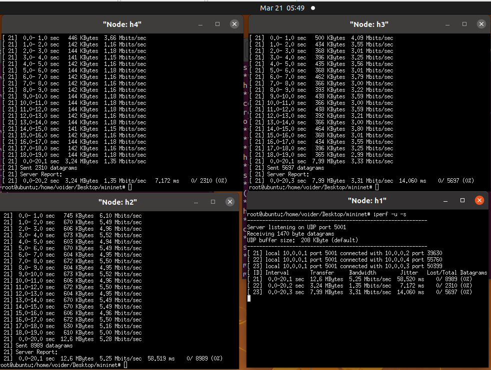
- 场景模拟
-